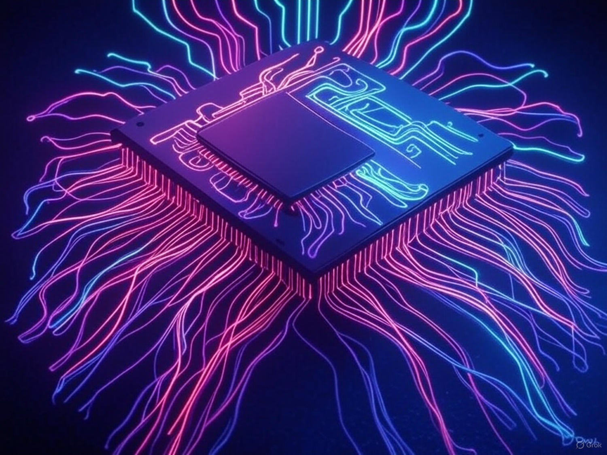

In an era where electrons are approaching their physical limits, a silent revolution is emerging — not in the realm of silicon, but in the very fabric of light. Photonic logic is redefining what it means to compute. Instead of traditional transistors flicking on and off, pulses of photons now dance through waveguides, executing logic gates at the speed of light. This is not just a hardware innovation — it’s a paradigm shift in how we define intelligence, computation, and energy itself.
Moore’s Law once guided us like a compass. But as transistors shrink to near-atomic scales, we face heat dissipation, quantum tunneling, and voltage instability. Electrons struggle in crowded nanowires. But photons? They don’t interact. They don’t collide. They glide — in straight lines, through vacuum or glass, with minimal loss. This opens the door to ultra-fast, low-power systems that are inherently parallel and interference-resistant.
Photonic logic isn’t magic — it’s physics. Instead of using electrical charge to represent 1s and 0s, it uses interference patterns, phase shifts, and optical intensity. At the heart of many optical computing systems is the Mach–Zehnder interferometer, where light splits and recombines, allowing constructive or destructive interference to act as a logic gate.

Other mechanisms involve ring resonators, waveguide crossings, and even quantum dots that modulate the behavior of individual photons. These gates can be layered into complex systems that perform AND, OR, XOR, and NOT operations — but without any electrons in motion. Heat, latency, and interference drop dramatically.
Let’s compare photonic and electronic logic at a glance:

AI is hungry — for data, for math, for speed. Matrix multiplication, the heart of neural networks, maps beautifully to photonic tensor cores. Companies like Lightmatter and Lightelligence have demonstrated chips where neural weights are encoded in phase arrays, and inputs are passed as beams of light. This allows a single layer of silicon photonics to execute billions of MAC (multiply–accumulate) operations per second — with no moving electrons.

The DRC language — Dewey Runtime Core — is inherently post-silicon. It doesn’t assume a CPU, a stack, or even bits. It targets execution morphologies: abstract representations of how logic manifests. Photonic logic is a perfect match for this. DRC can compile into signal graphs that align with optical interference patterns, rather than flat instruction sets. This turns photonic hardware into a dynamic runtime that evolves and aligns with the intent of the code, not just its structure.
Of course, it’s not all beams and dreams. Photonic systems require:
Still, each of these is an engineering problem, not a fundamental wall. And we’re already breaking through.
In the next 5–10 years, we expect photonic logic to:
The silicon era may have defined the information age. But light — silent, fast, eternal — will define the intelligence age.
If electrons were fire, then photons are thought. And we’re just beginning to listen.
Created by DWS. Written in DRC. Forged in light.